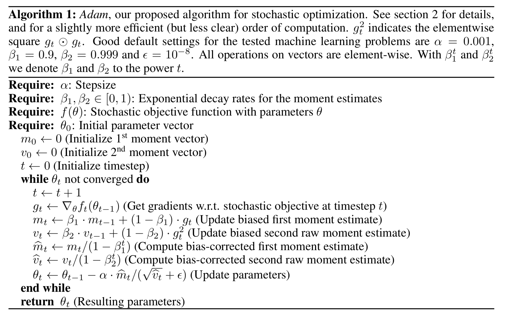

optimization
view markdownconvex optimization
convex sets (boyd 2)
- affine set: $x_1, x_2 \in C, \theta \in \mathbb{R} \implies \theta x_1 + (1 - \theta) x_2 \in C$
-
affine hull: aff C = {$\sum \theta_i x_i x_i \in C, \sum \theta_i =1 $}
-
- convex set: $x_1, x_2 \in C, 0 \leq \theta \leq 1 \implies \theta x_1 + (1 - \theta) x_2 $
-
convex hull: conv C = {$\sum \theta_i x_i : x_i \in C, \theta_i \geq 0, \sum \theta_i = 1$}
-
- cone: $\theta \geq 0 \implies \theta x \in C$
- operations that preserve convexity
- intersection (finite intersection of half-spaces)
- pointwise max of affine funcs
- composition
- affine
- perspective
- linar fractional = projective
- generalized inequalities:
- proper cone K: convex, closed, pointed, solid
- $x \preceq_K y \iff y-x \in K$
- proper cone K: convex, closed, pointed, solid
- separating hyperplane thm: C, D convex $C \cap D =\emptyset \implies \exists a \neq 0, b : s.t. \ a^Tx \leq b \forall x \in C, \a^Tx \geq b \forall x \in D$
-
supporting hyperplane thm: {$x a^tx = a^t x_0$} where $x_0$ on boundary of convex C -
dual cone $K^*$ = {$y x^Ty \geq 0 : \forall x \in K$} - $\preceq_{K^*}$ is dual of $\preceq_K$
- $x \preceq_K y \iff \lambda^T x \leq \lambda^T y \quad \forall : \lambda \succeq_{K^*} 0$
geometry
-
ellipsoid: {$x \in \mathbb{R}^n (x-x_c)^T P^{-1} (x-x_c) \leq 1$} where P symmetric, PSD -
{$x_c + Au u _2 \leq 1$}
-
-
hyperplane: {$x a^Tx = b$} ~ creates a halfspace -
norm cone: {$(x, t) : x \leq t$} -
polyhedron: {x Ax=b, Cx=d} = ${ \sum_i^k \theta_i v_i \; \sum_i^m \theta_i = 1, \theta_i \geq 0 } : m \leq k$ - simplex: conv{$v_{0:k}$}
convex funcs (boyd 3)
- definitions
- Jensen’s inequality $0 \leq \theta \leq 1$
- $f(\theta x_1 + (1 - \theta) x_2) \leq \theta f(x_1) + (1 - \theta) f(x_2)$
- $f(E[X]) \leq E[f(X)]$
- $\nabla^2 f(x) \succeq 0$
- $f(x_2) \geq f(x_1) + \nabla f(x_1)^T (x_2 - x_1)$
- can show this by restricting to an arbitrary line
- consider epi f - also use things that preseve convexity
- Jensen’s inequality $0 \leq \theta \leq 1$
- concepts
-
epigraph epi f = ${ (x, t) \; : x \in dom f, f(x) \leq t }$ - extended value extension: $\tilde{f}(x) = f(x)$ if $x \in dom f$ else $\infty$
- wide sense function - can take on values $\pm \infty$
-
= dom f = {$x f(x) < \infty$}
-
-
wide sense convex func: $f(x) = inf { t \in \mathbb{R} (x, t) \in F}$ where $F \subseteq \mathbb{R}^{n+1}$ -
$F(x) = inf { t \in \mathbb{R} (x, t) \in F }$
-
- $\alpha$-sublevel set of convex func is convex
-
- operations that preserve convexity
- nonnegative weighted sums ~ multiplies for logs
- affine map
- pointwise max of convex
- composition
- perspective
- minimization ~ sometimes
- conjugate of f
- $f^*(y) = \underset{x \in dom f}{sup} : y^T x - f(x)$
-
dom $f^*$ = {$y f^*(y)$ is finite} - called Legendre transform when f differentiable
- fenchel’s inequality: $f(x) + f^*(y) \geq x^ty$
- $f^{**} = f$ iff convex, closed
- ex. $f(S) = log : det X^{-1}$
- $f^*(Y) = \underset{X}{sup} [tr(YX) + log : det X]$
- $= -n - log : det(-Y) $ if $-Y \in S^n_{++}$
- $f^*(Y) = \underset{X}{sup} [tr(YX) + log : det X]$
- can use conj. to go other way: $f(y) = \underset{x}{sup}(y^Tx - f^*(x))$
optimization problems (boyd 4)
optimization
- standard form: $p^* = min : f_0(x)\s.t. : f_i(x) \leq 0 \ h_i(x) = 0$
- equivalent problems
- change of vars
- constraint transformations
- slack vars
- eliminating equalities
- eliminating linear equalities
- introducing equalities
- optimizing over some vars ~ ex. quadratic
- epigraph form: $min : t : s.t. : f_0 \leq t$
- implicit + explicit constraints
convex optimization
- standard form: \(p^* = min \: f_0(x)\\s.t. \: f_i(x) \leq 0 \\ a_i^Tx = b_i\) where all f are convex
- optimality criteria (special cases of KKT)
- x optimal if
- x is feasible
- $\nabla f_0 (x)^T(y-x) \geq 0 : \forall y $ feasible
- if unconstrained $\nabla f_0 (x) = 0$
- if equality only Ax=b, $\nabla f_0 (x) \perp N(A)$
- $x \succeq 0$, $\nabla f_0 (x) \succeq 0; x_i (\nabla f_0 (x))_i = 0$
- x optimal if
- equivalent convex problems
- eliminating equality constraints
- introducing equality constraints
- slack vars ~ for linear inequalities
- epigraph form
- minimizing over some vars
linear optimization
- \[p^* = min \: c^T x + d\\s.t. \: Gx \succeq h \\ Ax=b\]
- standard form $x \succeq 0$ is the only inequality
- standard dual: max $-b^T \nu$ s.t. $A^T \nu + c \geq 0$
- linear-fractional program
- $min : \frac{c^Tx + d}{e^tx+f} \ s.t : Gx \succeq h \ Ax = b$ ~ can be converted to LP
quadratic optimization
- \(min \: 1/2 x^TPx + q^Txr \\s.t. \: Gx \succeq h\) where $P \in S_+^n$
- QCQP - inequality constraints also convex
-
ex. $min : Ax-b _2^2$
-
-
SOCP - $$min f^Tx \ s.t. : A_ix+b_i _2 \leq c_i^T + d_i \ Fx=g$$
geometric program
- \(min \: f_0(x) \\ s.t. \: f_i(x) \leq 1 \: i = 1:m \\ h_i(x) = 1 \: i = 1:p\) where $f_{0:m}$ posynomials, $h_i$ monomials
- monomial $f(x) = c x_1^{a_1} \cdot x_n^{a_n}, c>0$
- posynomial ~ sum of monomials ~ can transform into convex w/ $y_i = log x_i$
generalized inequality
- \[min \: f_0(x)\\s.t. \: f_i(x) \preceq_{K_i} 0, i=1:m\\Ax=b\]
- conic form problem: \(min \: c^Tx \\ s.t. \: Fx +g \preceq_K 0\\Ax=b\) ~ set $K=S_+^K$
- SDP = semi-definite program: \(min \: c^T x\\s.t. \: x_1F_1+...+x_nF_n+G \preceq 0\\Ax=b\) ~ where $F_1, …, F_n \in S^k$
- standard form: $min : tr(CX) \ s.to : tr(A_iX)=b_i \ X \succeq 0$
duality (boyd 5)
- consider $\min : f_0 (x) \ s.t. : f_i(x) \leq 0 \ h_i(x) = 0$
- lagrangian $L(x, \lambda, \nu) = f_0(x) + \sum \lambda_i f_i(x) + \sum \nu_i h_i(x)$
-
dual function $g(\lambda, \nu) = \underset{x \in D}{\inf} L(x, \lambda, \nu)$ ~ g always concave
- $\lambda \succeq 0 \implies g(\lambda, \nu) \leq p^*$
- $(\lambda, \nu)$ dual feasible if
- $\lambda \succeq 0$
- $(\lambda, \nu) \in dom : g$
- when $p^* = - \infty$, dual infeasible
- when $d^*=\infty$, primal infeasible
-
dual related to to conjugate func
- ex. min f(x) s.t. $x = 0 \implies g(\nu) = -f^*(-\nu)$
- lagrange dual problem: $\max : g(\lambda, \nu)\s.t. : \lambda \succeq 0$
-
weak duality: $d^* \leq p^*$
- optimal duality gap: $p^* - d^*$
- strong duality: $d^* = p^*$ ~ requires more than convexity
- slater’s condition ~ if problem convex $\implies$ strong duality + $\exists$ dual optimal point
- $\exists x \in relint : D\f_i(x) < 0\Ax = b$ ~ point is strictly feasible
- to weaken this, affine $f_i$ can be $\leq 0$
-
sion’s minimax thm: $x \to f(x, y)$ ~ conditions
- $\implies \underset{x}{min} : \underset{y}{sup} : f(x,y) = \underset{y}{sup} : \underset{x}{min} : f(x,y)$
optimality conditions
- duality gap: $f_0(x) - g(\lambda, \nu)$
- can use stopping condition duality gap $\leq \epsilon_{abs}$ to be $\epsilon_{abs}$ - suboptimal
- strong duality yields complementary slackness
- $\lambda_i f_i(x^*)=0$
- KKT optimality conditions ~ assume $f_0, f_i, h_i$ differentiable, strong duality
- $f_i(x^*) \leq 0$
- $h_i(x^*) = 0$
- $\lambda_i^* \geq 0$
- $\lambda_i^f(x_i^) = 0$
- $\nabla f_0 (x^) + \sum \lambda_i^ \nabla f_i (x_i^) + \sum \nu_i^ \nabla h_i (x^*) = 0$
thms of alternatives
- weak alternative - at most one of 2 is true
- strong alternative - exactly one is true
- ex. Fredholm alternative
- ex. Farkas’s lamma
- $\exists x : Ax \leq 0, c^Tx < 0$
- $\exists y : y \geq 0, A^Ty + c = 0$
approx + fitting (boyd 6)
norm approx problem
-
minimize $ Ax-b $ -
ex. weighted norm approx. min W(Ax-b) -
ex. least squares min Ax-b $_2^2$ -
ex. chebyshev approx norm min Ax-b $_\infty$ - ex. penalty function approx problem: $min : \phi(r_1) + … + \phi(r_m)\s.t. : r=Ax-b$
least norm problem
-
min $ x \s.t. : Ax=b$ ~ min $ x_0+ Zu $, Z cols basis for N(A)
regularized approximation
-
min $ Ax-b + \gamma x $ -
min $ Ax-b ^2 + \gamma x ^2$ -
Tikhonov: $min : Ax-b _2^2 + \gamma x _2^2$ - examples
-
ex. regularize w/ Dx - ex. lasso
- ex. quadratic smoothing
- ex. total variation
-
robust approximation
- $A = \bar{A} + U$ ~ random w/ mean 0
-
stochastic robust approx problem: $min : E Ax-b $ -
(worst-case) robust approx prob: $min : sup Ax-b : A \in \mathcal{A}$
-
function fitting
- $f(u) = x_1 f_1 (u) + …. + x_n f_n (u)$ ~ $f_i$ are basis funcs, $x_i$ are coefficients
- sparse descriptions + basis pursuit
- interpolation
unconstrained minimization (boyd 9)
unconstrained problems
- $x^* = \text{argmin} : f(x) \implies \nabla f(x^*) = 0$
- examples
- ex. quadratic: $\min : 1/2 x^TPX + q^Tx + r$
- solved w/ $Px^* + q = 0$, if $P \succeq 0$, unique soln $-P^{-1}q$
- ex. unconstrained geometric program
- ex. analytic center of linear inequalities
-
$\min : f(x) = -\sum : \log (b_i - a_i^Tx)$ where dom f = ${x a_i^Tx< b_i, i = 1:m}$
-
- ex. quadratic: $\min : 1/2 x^TPX + q^Tx + r$
- 3 definitions of convexity
- $0 \leq \theta \leq 1$
- $f(\theta x_1 + (1 - \theta) x_2) \leq \theta f(x_1) + (1 - \theta) f(x_2)$
- $\nabla^2 f(x) \succeq 0$
- $f(x_2) \geq f(x_1) + \nabla f(x_1)^T (x_2 - x_1)$
- $0 \leq \theta \leq 1$
- $\color{red}0 \preceq \color{green}{\underset{\text{strong convexity}}{mI}} \preceq \nabla^2 \color{cornflowerblue}{f(x)} \preceq \underset{\text{smoothness}}{MI}$
- $\kappa = M/m$ bounds condition number of $\nabla^2 f = \frac{\lambda_{\max}(\nabla^2 f)}{\lambda_{\min}(\nabla^2 f)}$
- strongly convex: $\nabla^2 f(x) \succeq mI$
-
$\implies f(x_2) \geq f(x_1) + \nabla f(x_1)^T(x_2-x_1) + m/2 x_2-x_1 _2^2$ -
minimizing yields $p^* \geq f(x) - 1/(2m) \nabla f(x) _2^2$ - if the gradient of f at x is small enough, then the difference between f(x) and p⋆ is small
-
- smooth: $\exists : M, : \nabla^2f(x) \preceq MI$
-
$\implies f(y) \leq f(x) + \nabla f(x)^T(y-x) + M/2 y-x _2^2$
-
- cond(C) = $W_{\max}^2 / W_{\min}^2$
-
width of convex set $C \subset \mathbb{R}^n$ in direction q with $ q _2=1$ - $W(C, q) = \underset{z \in C}{\sup} : q^Tz - \underset{z \in C}{\inf} : q^Tz$
-
-
alpha-level subset: $C_\alpha = {x f(x) \leq \alpha}$
descent methods
- update rule $x = x + t \Delta x$
- exact line search: $t = \underset{s \geq 0}{\text{argmin}} :f(x+s \Delta x)$
- backtracking line search
- given a descent direction $\Delta x \text{ for } f, x \in dom : f, \alpha \in (0, 0.5), \beta \in (0, 1)$
- t:=1, $\alpha \in (0, 0.5), \beta \in (0, 1)$
- while $f(x + t \Delta x) > f(x) + \alpha t \nabla f(x)^T \Delta x$
- $t *= \beta$

gd method
- convergence
- can bound number of iterations required to be less than $\epsilon$
- examples
- a quadratic problem in $R^2$
- non-quadratic problem in $R^2$
- a problem in $R^{100}$
- gradient method and condition number
- conclusions
- gd often exhibits approximately linear convergence
- convergence rate depends greatly on $cond (\nabla^2 f(x))$ or sublevel sets
steepest descent method
- examples
- euclidean norm: $\Delta x_{sd} = - \nabla f(x)$
-
quadratic norm $ z _P = (z^TPz)^{1/2} = P^{1/2}z 2$ where $P \in S{++}^n$ - $\Delta x_{sd} = -P^{-1} \nabla f(x)$
- $\ell_1$ norm: $\Delta_{sd} = -\frac{\partial f(x)}{\partial x_i} e_i$
newton’s method
- Newton step $\Delta x_{nt} = - \nabla^2 f(x)^{-1} \nabla f(x)$
- PSD $\implies \nabla f(x)^T \Delta x_{nt} = - \nabla f(x)^T \nabla^2 f(x)^{-1} \nabla f(x) < 0$
- Newton’s method
- compute the newton step $\Delta x_{nt}$ and decrement $\lambda^2 = \nabla f(x)^T \nabla^2 f(x)^{-1} \nabla f(x)$
- stopping criterion: quit if $\lambda^2 / 2 \leq \epsilon$
- line search: choose step size t w/ backtracking line search
- update: $x += t \Delta x_{nt}$
basic algorithms
- types: batch (have full data) vs online
- gradient descent = batch gradient descent
- gradient - vector that points to direction of maximum increase
- at every step, subtract gradient multiplied by learning rate: $x_k = x_{k-1} - \alpha \nabla_x F(x_{k-1})$
- alpha = 0.05 seems to work
- $J(\theta) = 1/2 (\theta ^T X^T X \theta - 2 \theta^T X^T y + y^T y)$
- $\nabla_\theta J(\theta) = X^T X \theta - X^T Y$
- = $\sum_i x_i (x_i^T - y_i)$
- this represents residuals * examples
- stochastic gradient descent
- don’t use all training examples - approximates gradient
- single-sample
- mini-batch (usually better in offline case)
- coordinate-descent algorithm
- online algorithm - update theta while training data is changing
- when to stop?
- predetermined number of iterations
- stop when improvement drops below a threshold
- each pass of the whole data = 1 epoch
- benefits
- less prone to getting stuck to shallow local minima
- don’t need huge ram
- faster
- don’t use all training examples - approximates gradient
- newton’s method for optimization
- second-order optimization - requires 1st & 2nd derivatives
- $\theta_{k+1} = \theta_k - H_K^{-1} g_k$
- update with inverse of Hessian as alpha - this is an approximation to a taylor series
- finding inverse of Hessian can be hard / expensive
- ADMM - alternating direction method of multipliers (ADMM) is an algorithm that solves convex optimization problems by breaking them into smaller pieces, each of which are then easier to handle
expectation maximization - j 11
- method to maximize likelihood on model with observed X and hidden Z
- expectation step - values of unobserved latent variables are filled in
- calculates prob of latent variables given observed variables and current param values
- maximization step - parameters are adjusted based on filled-in variables
- expectation step - values of unobserved latent variables are filled in
- goal: maximize complete log-likelihood, but don’t know z
-
expected complete log-likelihood $E_{p’}[l(\theta; x,z)] = \sum_z p’(z x,\theta) \cdot \log : p(x,z \theta)$ - p’ distribution is assignment to z vars
-
deriving auxilary function $\mathcal L(q, \theta, x) = \sum_z p’(z x) \log \frac{p(x,z \theta)}{p’(z x)}$ - lower bound for the log likelihood -
$\begin{align} l(\theta; x) &= \log : p(x \theta) & \text{incomplete log-likelihood} \&= \log \sum_z p(x,z \theta) &\text{complete log-likelihood}\&= \log\sum_z p’(z x) \frac{p(x,z \theta)}{p’(z x)} &\text{multiplying by 1} \ &\geq \sum_z p’(z x) \log \frac{p(x,z \theta)}{p’(z x)} &\text{Jensen’s inequality}\&\triangleq \mathcal L (p’, \theta) \end{align}$ - this removes dependence on z
-
- steps
-
E: $p’(z x, \theta) = \underset{p’}{\text{argmax}}: \mathcal L(p’,\theta, x)$ - M: $\theta = \underset{\theta}{\text{argmax}} : \mathcal L(p’, \theta, x)$
- equivalent to maximizing expected complete log-likelihood
- stochastically converges to local minimum
-
- alternatively, can look at kl-divergences
misc
nn optimization
why is it hard?
- plateaus
- winding canyons
- cliffs
- local maxima to dodge
- saddle points (local max and local min)
- most popular
- sgd
- sgd + nesterov momentum
- adam
- adagrad - maintains a per-parameter learning rate that improves performance on problems with sparse gradients
- rmsprop - (ignore) per-parameter learning rates that are adapted based on the average of recent magnitudes of the gradients for the weight (e.g. how quickly it is changing)
- adam - “adaptive moment estimation” (kingma_2015)
- keep track of per-parameter learning rate (based on first moment of gradients tracked) and per-parameter second moment (based on variance of gradients tracked)
- alpha - learning rate
- beta1 - exponential decay rate for first moment estimate
- default 0.9
- beta2 - exponential decay rate for 2nd moment estimates (should be higher when gradients sparser)
- default 0.999
- epsilon - small number to prevent division by zero
- default 1e-8 - usually requires tuning (ex. inception requires 1e-1)

visualization
- default 1e-8 - usually requires tuning (ex. inception requires 1e-1)
- requires low dims
- goodfellow 2015 “Qualitatively characterizing neural network optimization problems” plots loss on line from starting point to ending point
- could do PCA on params
complicated is simpler
- ex. $x^3 \sin(x)$ is simpler than just $x$ on the domain [−0.01, 0.01]
- dropout is like ridge
mixed integer programming (mip)
Notes from this overview
-
ex: minimize $c^{\top} x$ s.t.
- $\mathrm{A} \mathrm{x}=\mathrm{b}$ (linear constraints)
- $l\leq x \leq u$ (bound constraints)
- some or all $x_j$ must take integer values (integrality constraints)
-
solving: branch-and-bound
-
integer constraints make this difficult so start by solving the relaxation without integer constraints
-
pick one of the variables $x_b$ that was not integer to be our branching variable
- say it’s value was 5.7, now solve 2 MIPS, one with constraint $x_b \leq 5$ an $x_b \geq 6$
- return better solution of these two
- iterate by solving relaxation and then adding more branching constraints
- say it’s value was 5.7, now solve 2 MIPS, one with constraint $x_b \leq 5$ an $x_b \geq 6$
-